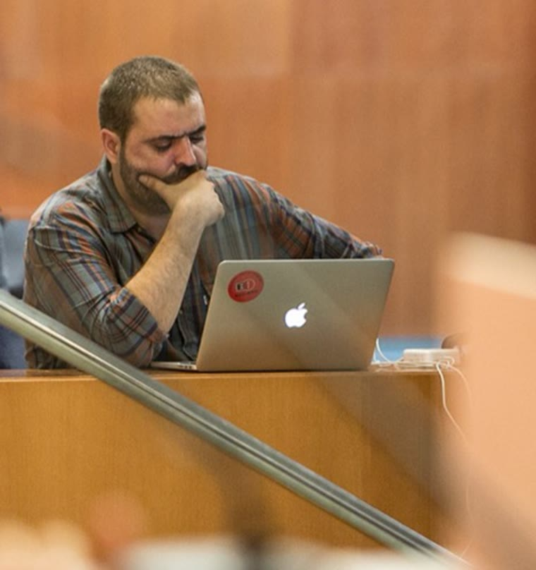

Vaig començar el 2008 fent periodisme local i màrqueting digital, que és on s'aprèn a contrastar, escriure clar i no empassar-se res. D'allà vaig passar a dirigir la redacció d'un diari digital i a la comunicació de moviments socials des d'una cooperativa, i després a la primera línia política: cap de premsa dels grups parlamentaris i cap de comunicació i estratègia d'una organització d'àmbit nacional.
Avui acompanyo organitzacions i projectes com a consultor independent d'estratègia i incidència.

D'una organització política d'àmbit nacional, del 2021 al 2024: discurs, estratègia del grup parlamentari i del congrés, campanyes i comunicació interna. Coordinació de l'equip de comunicació i participació en els òrgans de direcció.
Direcció de premsa dels grups parlamentaris a la X i XI legislatures (2011-2017) i coordinació de campanyes electorals al Parlament el 2012 i el 2015, i a les municipals del 2011 i el 2015. El 2019, equip desplaçat a Madrid per cobrir el judici de l'1-O.
Cap de redacció de Somvilafranca.cat, continguts i posicionament a Diari Jornada i SEM/SEO en una societat cooperativa. Fotoperiodisme i col·laboracions en mitjans comarcals.
A Quepo, comunicació de projectes com Associa't (entitats de Barcelona), Salut, Drets, Acció (sanitat pública) i La Veïnal (televisió comunitària).
Una primera conversa de vint minuts, gratis i sense compromís. Explica'm què necessites i et dic si ho puc resoldre, com ho faria i amb quin abast.
Tinc franges els dilluns, dimarts i dijous, de 9 a 11. Si no te'n va bé cap, escriu-me i en busquem una.